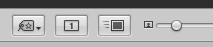

To apply a keyword to all your selected images using Apple Aperture 3, make sure to turn off the Primary Only mode using either the Edit-Menu, or the button in the right bottom corner that says [1]. It should be unselected like in the screenshot here below.

You can then use whatever method to add keywords, e.g. using the Control Bar (press D) and its Keywords Controls (press shift D).
This has been bugging me for a week. Maybe I pushed the Primary Only button by mistake. Yes, you can do it using a batch change. But luckily, you don’t have to do the simplest thing the hardest way. Just, careful where you push!
Comments
There was a lot of frustration behind this Google search.
Thanks, Agree that this tip was a lifesaver. Pity that the Aperture 3 “manual” doesn’t seem to mention it. I was very frustrated when I did as they suggested and dragged the keywords to one of the images of my selection and found that this was the only image that had the keywords attached.
Your tip allows me to do what I (and obviously many others want to do).